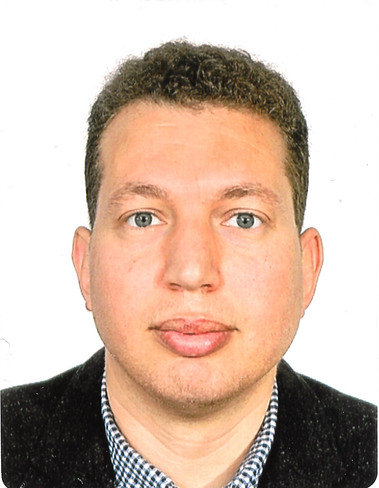

Mohamed Abdelwahab - Marine Robotics Research Lead @ Khalifa University, UAE
|  |
Mohamed Abdelwahab, PhD, FHEA, MIET
Marine Robotics Research Lead @ KU Center for Autonomous Robotic Systems - Khalifa University, Abu Dhabi, UAE
Visiting Research Fellow @ Faculty of Environment and Technology, University of the West of England, UK
Email: moh.heshmat@gmail.com Phone: +971507922878, +44(0)7933723013
LinkedIn: Mohamed H.H. Abdelwahab
Google Scholar: Scholar Profile
GitHub: GitHub Profile
Research Interests: Computer Vision, Robot Navigation, Robot Perception, and Autonomous Inspection Robots
|
Biography
As Marine Robotics Autonomy Research Lead at Khalifa University Robotics Research Center, I spearhead the development of cutting-edge technologies that drive the autonomy of underwater robots. My primary focus is creating advanced localization and navigation systems that empower these robots to operate independently in challenging marine environments.
With a robust background in robotics and artificial intelligence, I specialize in developing sophisticated computer vision and deep learning models tailored for underwater inspection tasks. My work integrates state-of-the-art AI techniques to enhance the robots' ability to perform precise and reliable inspections, ensuring operational efficiency and safety in various underwater applications.
I aim to leverage my expertise and passion for AI and robotics to solve real-world problems and create positive impacts. I have a strong research background, obtaining my PhD in Robotics (joint program from EJUST, Egypt, and Osaka University, Japan). Throughout my career, I have published multiple papers in renowned conferences and journals and received several honors and awards for my research and academic achievements.
In addition to my research endeavors, I am a Fellow of the Higher Education Academy, UK, demonstrating my commitment to excellence in teaching and learning. I am dedicated to mentoring the next generation of engineers and researchers, fostering an environment of innovation and academic excellence.
As someone with British and Egyptian nationalities, I bring a rich cultural perspective to my work and collaborations. This unique background enhances my ability to develop innovative solutions and collaborate with diverse teams, pushing the boundaries.
Research Interests
- Computer Vision for Industrial Inspection and Healthcare Robotics
- Robot Navigation for ground and underwater applications
- Robotic Perception and Human Detection Systems
- Autonomous Robotics Systems
Research Experience
Marine Robotics Research Lead (April 2024 - Present)
Senior Computer Vision Engineer (June 2023 - May 2024)
Developed deep learning applications for digital dentistry and industrial inspection systems.
Computer Vision Engineer (Feb 2022 - June 2023)
Led development of visual navigation systems for ground-printing robots.
Research Fellow in Offsite Logistics and Artificial Intelligence (July 2020 - Feb 2022)
Engineered an innovative AI-cloud-IoT platform for automating logistics activities for construction industry.
Research Fellow in Industrial Robotic Inspection (Jan 2018 - July 2020)
Designed and developed an inspection robot tailored for unmanned industrial plants (navigation and inspection functions).
Education
Ph.D. in Mechatronics and Robotics Engineering
Thesis: "Development of a Novel Deliberate Camera Oscillation System to Improve Visual Mono SLAM Performance"
M.Sc. in Mechatronics and Robotics Engineering
Thesis: "Study of the Effect of Feature Geometric Composition on the Accuracy of Visual Mono SLAM Systems"
B.Sc. in Computer Science
Project: Face Recognition Using C++ and OpenCV
|